Weg met Excel. Het kan écht beter.
Van 27 Excel-bestanden naar één scherm.
Van 2 maanden naar 3 weken — 7.000 medewerkers, 18 landen
Bij Kaneka splitste HR elk jaar één masterbestand in 27 werkbladen. Vandaag verdelen die 27 afdelingshoofden hun budget op dezelfde plaats — en achteraf is elke beslissing uit te leggen.
| Rij | A | B | C | D | E | F | G | H |
|---|---|---|---|---|---|---|---|---|
| 1 | Medewerker | Functie | Anc. | Bruto | Index | Merit | Nieuw | Compa |
| 2 | M. Peeters | Teamleider | 12 j | 4.180 | 92 | 105 | 4.377 | 1,04 |
| 3 | S. Vermeulen | Operator A | 7 j | 3.240 | 72 | 60 | 3.372 | 0,97 |
| 4 | K. De Smet | Planner | 3 j | 3.560 | 79 | #REF! | #REF! | — |
| 5 | A. Willems | Kwaliteitscontrole | 18 j | 3.910 | 86 | 0 | 3.996 | 1,11 |
| 6 | N. Jacobs | Ploegbaas | 9 j | 4.020 | 89 | 140 | 4.249 | 1,02 |
| 7 | L. Van Damme | Technieker | 5 j | 3.480 | 77 | 85 | 3.642 | 0,94 |
| 8 | H. Mertens | Operator B | 2 j | 3.105 | 69 | 45 | 3.219 | 0,91 |
| 9 | D. Claes | Procesingenieur | 14 j | 4.640 | 103 | 150 | 4.893 | 1,08 |
| 10 | Totaal toegekend | 8 van 14 | 25.895 | 576 | 585 | 27.056 | ||
| 11 | Budget afdeling | Budget!$B$4 | 567 | 26.243 | +3,1% |
-
Eén verwijzing brak toen het blad werd gesplitst. #REF! in F4 rekent nu stilletjes met nul.
-
Het toegekende bedrag staat 3,1% boven het budget. Dat merk je pas bij het samenvoegen.
-
Zesentwintig andere afdelingen zitten in zesentwintig andere bestanden.
Gebruikt door HR- en rewardteams bij
Vier klanten, van 370 tot 7.000 medewerkers. Meer zijn het er vandaag niet, en we zetten er ook geen bij.
Januari
Het bestand is niet het probleem.
Iemand heeft die formules gebouwd. Jaar na jaar bijgehouden, elke reorganisatie erin verwerkt, elke uitzondering netjes gedocumenteerd in een kolom ernaast. Dat is knap werk, en het heeft jarenlang gewerkt. Het knelt pas wanneer er elf mensen tegelijk in werken, in vier verschillende versies, met één deadline.
De estafette, stap voor stap
-
01
Het masterbestand opbouwen: loonvorken, anciënniteit, indexatie, promotieregels.
-
02
Splitsen in één bestand per afdeling. Zevenentwintig keer.
-
03
Versturen naar de afdelingshoofden, met de uitleg erbij die vorig jaar ook al nodig was.
-
04
Herinneren. En daarna nog eens herinneren.
-
05
Terugkrijgen — in vier formaten, twee met eigen kolommen erbij, één als pdf.
-
06
Manueel samenvoegen. En daarna alles nakijken, want samenvoegen is waar het misgaat.
-
07
Vaststellen dat het budget 3% over is.
-
08
Herrekenen, herverdelen, opnieuw versturen. Terug naar stap 03.
-
09
De loons-, bonus- en verhogingsbrieven typen.
Twee weken werk. En dan is er nog geen enkel gesprek met een medewerker gevoerd.
En zo heet het bestand tegen dan
- loonronde_2026_master.xlsx 04/01
- loonronde_2026_master_v2.xlsx 07/01
- loonronde_2026_PRODUCTIE_terug.xlsx 14/01
- loonronde_2026_master_v2_MERGE.xlsx 16/01
- loonronde_2026_v3_na_budget.xlsx 19/01
- loonronde_2026_DEF.xlsx 21/01
- loonronde_2026_DEF_finaal.xlsx 22/01
- loonronde_2026_DEF_finaal_v2.xlsx 23/01
Niemand heeft dit slordig gedaan. Dit is wat een goed gebouwd bestand doet zodra het door te veel handen gaat. Het bestand is niet uit zijn krachten gegroeid — het is uit zijn omgeving gegroeid.
DPG Media
En dan vertrekt de persoon die het bestand kende.
Bij DPG Media draaide het beloningsproces jarenlang op spreadsheets met eigen scripts, gebouwd en onderhouden door één specialist. Die bestanden werden per afdeling gesplitst, verdeeld en na de toekenning weer samengevoegd. Het werkte — tot die ene collega het bedrijf verliet. De kennis vertrok mee, en HR had op korte termijn een oplossing nodig.
Dat is de reden die geen wetgeving, geen datum en geen interpretatie nodig heeft. Elke C&B-verantwoordelijke die dit leest, is die persoon — of heeft die persoon net vervangen.
Vandaag kennen 130 leidinggevenden bij DPG Media hun loonsverhogingen en bonussen toe in Youbo, voor 1.500 Belgische medewerkers. Sinds 2025 volgen ook meer dan 3.000 Nederlandse collega's.
En het argument dat niemand graag hardop zegt: een spreadsheet met loondata beveilig je met een paswoord. Paswoorden worden doorgestuurd. In Youbo ziet elke leidinggevende alleen zijn eigen team, en wordt elke toegang en elke wijziging gelogd.
„Waar hr-medewerkers voorheen makkelijk twee weken bezig waren met het opstellen van de spreadsheets, duurt dit nu hooguit twee dagen.”

Mieke Catthoor
Compensation & Benefits Manager BeNe, DPG Media
Twee weken naar twee dagen. Dat is de rekensom achter 7× sneller.
Dezelfde ronde, één systeem
Dit is wat er in de plaats komt.
Eén lijst per afdeling, met de loonvork, de anciënniteit en de compa-ratio van elke medewerker ernaast. Het budget telt live mee terwijl de leidinggevende verdeelt. Overschrijdt hij het, dan kleurt het cijfer rood. Meer uitleg heeft niemand nodig.

Het budget telt live mee
Niet achteraf bij het samenvoegen, maar terwijl er verdeeld wordt. Er is geen ronde waarin je op 21 januari ontdekt dat je 3% over zit.
Geen splitsen, geen samenvoegen
Iedereen werkt in hetzelfde systeem, elk in zijn eigen stuk. De hele estafette van hierboven — stap 02 tot 08 — bestaat niet meer.
Elke wijziging heeft een naam en een datum
Wie kende wat toe, wanneer, en op welke regel uit je loonbeleid. Dat is het verschil tussen een beslissing en een herinnering.
Vier Belgische organisaties
Wat het bij hen heeft opgeleverd.
Van 370 tot 7.000 medewerkers, in chemie, media, bouw en HR-dienstverlening. Elk cijfer hieronder komt uit hun eigen referentiecase.
3 weken
in plaats van meer dan 2 maanden — 7.000 medewerkers, 18 landen
7× sneller
2 weken voorbereiding werd 2 dagen — 4.500 medewerkers, 130 leidinggevenden
2 weken
bespaard per jaar — 370 medewerkers, 27 afdelingen
3 maanden
van beslissing tot live — 450 bedienden, beslist in september, live in december
TODO — nodig van klant: bestemming van „lees de case” per blok (pdf-download of case-pagina), plus de twee bijkomende klanten die op korte termijn zouden volgen. De rij is gebouwd op zes.
Preview — vijf schermen
Klik er zelf even doorheen.
Dit is geen demo — een demo krijg je van Bart, met je eigen loonregels erin. Dit zijn de vijf schermen waar een cyclus doorheen loopt, in de volgorde waarin je ze tegenkomt.
Wil je dit met je eigen loonvorken en regels zien? Vraag een demo aan.
Maatwerk, geen sjabloon
Het loonbeleid dat je op papier hebt, ook echt toepassen.
Je loonbeleid bestaat al. In workshops zetten we het om in regels die de tool toepast — loonvorken, anciënniteit, compa-ratio, indexatie, promotie- en bonusregels. Daarna start elke cyclus met een voorstel dat uit jouw regels volgt, niet uit een standaardmodel.
Kaneka
Vijftig jaar geschiedenis, 27 afdelingen
Kaneka's loonbeleid heeft vijftig jaar aan afspraken en uitzonderingen. Dat is in drie maanden vertaald naar een logisch en werkbaar systeem, mét de strikte hiërarchie die er bij hoort. De eerste cyclus is afgerond zonder noemenswaardige problemen.
SD Worx
Achttien landen, achttien reeksen regels
Elk land heeft eigen wetgeving en eigen indexatieregels, en de cycli lopen niet gelijk: België in april, het Verenigd Koninkrijk in juni, Noorwegen in juli. De eerste tool die SD Worx testte, kon dat niet aan. Te statisch, zegt People Director Pieter-Jan Boden.
„We hebben toch al een HR-pakket?”
Dat is meestal zo, en Youbo vervangt het niet. Youbo koppelt met je core HR-, payroll- en performancesystemen: de loongegevens komen binnen, de goedgekeurde pakketten gaan terug. Bij Kaneka loopt die koppeling via eBlox.
Aertssen Group ging bewust op zoek naar een aparte tool. Maxime Van Gestel, HR: „Er zijn genoeg tools op de markt, maar die maken meestal deel uit van een hr-softwarepakket. Wij zochten specifiek een tool puur voor het compensatieproces.”
TODO — nodig van klant: de lijst met integraties bij naam. Nu is alleen eBlox bevestigd.

De echte drempel
Je leidinggevenden openen het ook echt.
Dat is de vraag waar dit soort trajecten op stukloopt: honderdtwintig afdelingshoofden die één keer per jaar, onder tijdsdruk, iets moeten doen wat ze sinds vorige januari niet meer hebben aangeraakt.
Bij Kaneka kregen alle leidinggevenden één uur opleiding. Bij Aertssen was er geen handleiding nodig en kwamen er nauwelijks vragen. Bij DPG Media werken er vandaag 130 in.
Het scherm doet het meeste werk: het voorstel staat er al, gebaseerd op je loonbeleid, met de loonvork en de anciënniteit van de medewerker ernaast. En als het budget overschreden wordt, kleurt het cijfer rood.
„Als je met een computer kunt werken, kun je met Youbo overweg. Je moet je niet door een dik handboek worstelen.”

Marlies Bots
Compensation & Benefits Manager, Aertssen Group

Uitlegbaarheid
De cijfers waarop je in 2027 rapporteert, maak je in 2026.
Het eerste loonkloofrapport onder de Europese richtlijn is voor werkgevers vanaf 250 medewerkers verwacht tegen 7 juni 2027, en het rapporteert over het voorgaande kalenderjaar. Dat betekent dat de verhogingen die je nu toekent, de cijfers zijn waarop je straks rapporteert.
Wat vandaag al geldt in België
- Loonkloofwet van 22 april 2012
- Elke werkgever vanaf 50 werknemers maakt tweejaarlijks een analyseverslag van de bezoldigingsstructuur op, opgesplitst per geslacht, anciënniteit, opleidingsniveau en functieniveau, en bezorgt dat aan de ondernemingsraad.
- CAO nr. 25ter
- Functieclassificatiesystemen moeten getoetst worden op sekseneutraliteit.
- Loonnorm 0,0% voor 2025–2026
- Vastgelegd bij KB van 12 september 2025. Indexatie, baremieke anciënniteitsverhogingen en promoties vallen erbuiten — maar je moet wel kunnen tonen in welke categorie elke verhoging valt. PC 200 indexeerde op 1 januari 2026 met 2,21%, en de centenindex geldt daar voor het eerst vanaf 1 januari 2027.
Alles samen: de discretionaire meritpot in België is structureel bijna nul, elke verhoging moet in een uitgezonderde categorie passen, en je moet kunnen aantonen in welke. Nauwkeurigheid is hier geen luxe — het is de enige ruimte die je hebt.
„Je hebt altijd zicht op wie welke loonsverhogingen en bonussen heeft toegekend. Aanpassingen worden vermeld met datum en verantwoordelijke, tot op het detailniveau. Dat vermijdt discussies achteraf.”
Marlies Bots
Compensation & Benefits Manager, Aertssen Group
De loonkloofanalyse, in de woorden van een klant
Danny Haneveer, Compensation & Benefits Manager bij Kaneka: „Die laat zien wat de loonkloof is, en welke verschillen er statistisch verklaarbaar zijn.”
DPG Media publiceert zijn eigen loonkloof — vandaag 1,9% — met de ambitie die binnen enkele jaren volledig weg te werken. Youbo helpt daarbij.
En wat níet klopt
Je sociaal secretariaat heeft je waarschijnlijk al geschreven dat er vandaag niets moet. Dat klopt. België heeft de Europese loontransparantierichtlijn niet omgezet voor de privésector; de omzettingsdatum van 7 juni 2026 is gepasseerd, de gesprekken in de NAR liggen sinds april 2026 stil en er zijn alleen decreten voor overheid en onderwijs.
Wij gaan je dus niet vertellen dat de wet je nu verplicht. Wat wél waar is: het basisjaar loopt al, en de Belgische verplichtingen hierboven bestaan vandaag. Het wordt strenger, niet losser.
Implementatie
Beslissing in september. Begin december live.
Dat is geen belofte, dat is het schema van Aertssen Group. Bij Kaneka duurde het eveneens drie maanden, waarna de eerste volledige cyclus is afgerond zonder noemenswaardige problemen. Het traject bestaat uit workshops waarin je loonbeleid wordt omgezet in regels, wekelijkse check-ins en één opleidingssessie voor de leidinggevenden.
Belgische loonrondes lopen doorgaans van januari tot april. Wil je klaar zijn voor de cyclus van volgend jaar? Reken op drie maanden en begin in het najaar.
-
Maand 1
Workshops: je loonbeleid wordt regelwerk.
-
Maand 2
Data en koppelingen, testen met echte gegevens.
-
Maand 3
Opleiding van de leidinggevenden, en live.
De tip van Mieke Catthoor voor wie begint: „Test zo snel mogelijk met echte data. Dan komen anomalieën sneller aan het licht.”
Loondata in de cloud
Youbo is ISO 27001-gecertificeerd en GDPR-conform. Elke leidinggevende krijgt toegang tot precies zijn eigen team en niets daarbuiten. Elke toegang en elke wijziging wordt gelogd.
Zet dat naast het alternatief: een Excel-bestand met een paswoord erop, dat rondgaat per mail.

Maak van verlonen het positieve proces dat het hoort te zijn.
Niet omdat het moet. Omdat de twee weken die naar splitsen, samenvoegen en herrekenen gingen, beter naar de gesprekken zelf gaan.
„Verlonen is nu eindelijk het positieve proces dat het hoort te zijn.”
Pieter-Jan Boden
People Director, SD Worx
Volledige openheid: SD Worx is ook de meerderheidsaandeelhouder van Teal Partners, het Belgische bedrijf achter Youbo. Ze hadden dit dus zelf kunnen bouwen. Ze gebruiken Youbo, voor 7.000 medewerkers in 18 landen.
De demo
Dertig minuten, met Bart De Nil.
Bart is de rewardexpert van Teal Partners en hij geeft de demo's zelf. Je stuurt hem vooraf je loonregels door — loonvorken, anciënniteitsregels, hoe je index en promoties behandelt — en hij zet ze in de tool. Wat je ziet, is dus je eigen loonronde, niet een voorbeeldbedrijf.

„Toen ik een demo zag, wist ik: hier hebben we op gewacht.”
Bart Verhoeven
HR & General Affairs Manager, Kaneka
Twee Barts in dit verhaal: Bart De Nil geeft de demo, Bart Verhoeven is klant bij Kaneka.
Bedankt, je aanvraag is verstuurd.
Bart De Nil neemt binnen twee werkdagen contact op om een moment van dertig minuten te prikken. Hij vraagt je dan om je loonregels vooraf door te sturen, zodat de demo over jouw loonronde gaat en niet over een voorbeeldbedrijf.
Kan het sneller? Bel gerust: +32 476 96 33 40.
Liever eerst even bellen?
Dertig minuten · vrijblijvend · je spreekt meteen Bart zelf
TODO — nodig van klant: een agenda-link van Bart, zodat hier „boek direct in Barts agenda” kan staan in plaats van een telefoonnummer.
Over Youbo
Een Belgisch bedrijf, met een adres.
Youbo is een product van Teal Partners BV, Damplein 23 in Antwerpen, ondernemingsnummer 0642.824.542. Meerderheidsaandeelhouder is SD Worx. Vier klanten staan met naam en cijfers op deze pagina; hun cases zijn in hun eigen woorden opgetekend.
Dat is een eerlijke vraag in deze markt: Assemble werd overgenomen door Deel, Barley door Workleap, en het Belgische Officient is opgegaan in Exact. Wie er over vijf jaar nog is, is geen paranoïde vraag maar een geïnformeerde.